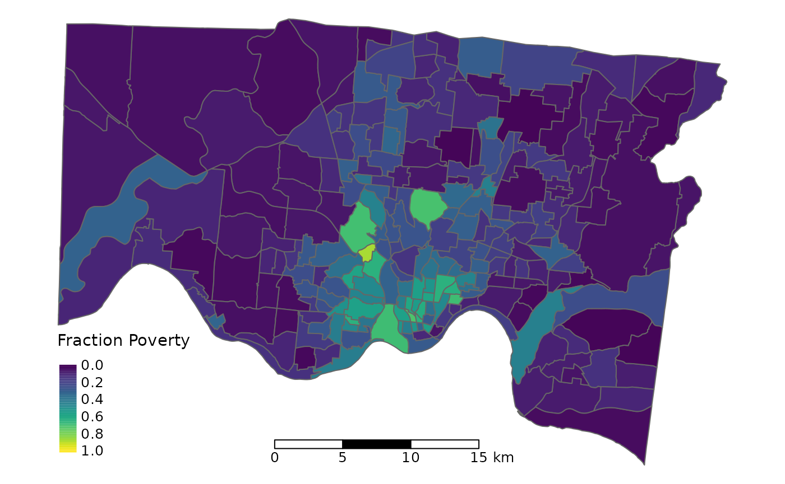
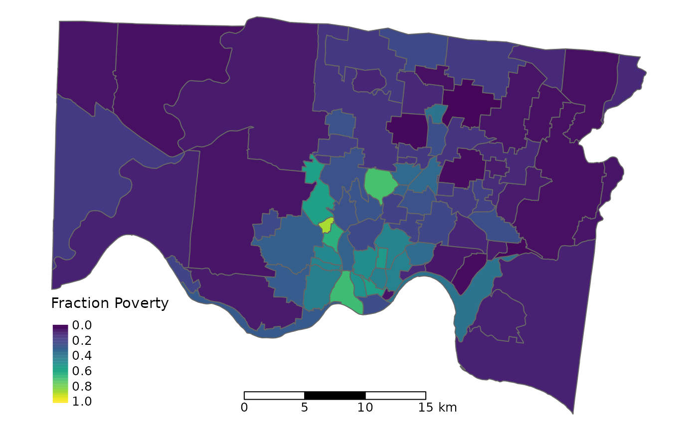
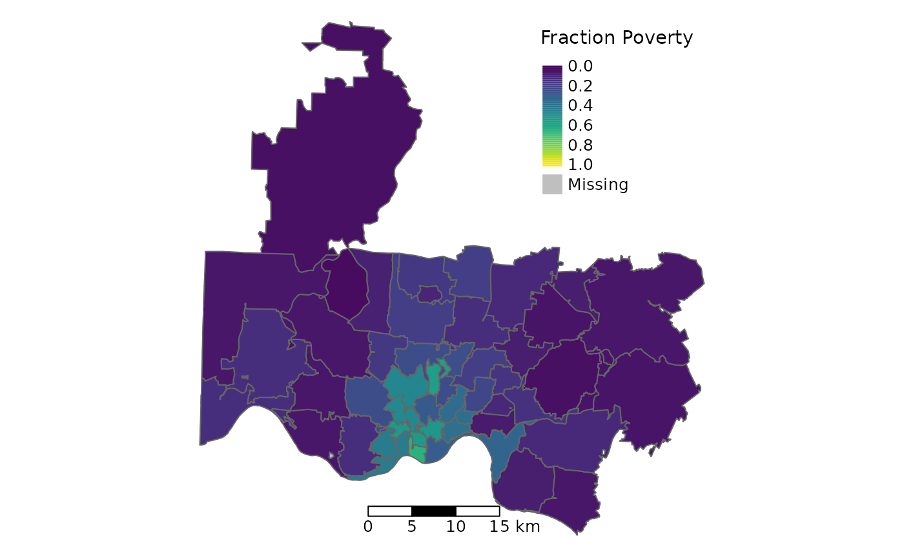

{cincy} Geographies
geographies.RmdThe cincy package provides commonly used Cincinnati
geographies, including census tracts, neighborhoods, and ZIP Code
Tabulation Areas, as sf objects.
Census Tracts

Census tracts are small statistical subdivisions of a county that change every 10 years.
Census tracts have a population of about 4,000 on average (max: 1,200; min: 8,000)
Census tracts are the smallest unit of area with data available for most American Community Survey variables with reasonable margins of error.
There were 230 census tracts recorded in Hamilton County in the 2000 census, 222 in the 2010 census, and 226 in the 2020 census.
Neighborhoods

-
Although census tracts approximate local neighborhoods, they are mostly based on population size. Neighborhood boundaries can be defined in other ways that may be more appropriate in the context of policy changes or interventions. Below are three different neighborhood definitions in the Cincinnati area.
Cincinnati Community Council (CCC) Neighborhoods: Cincinnati Community Council neighborhood definitions for neighborhoods within the Cincinnati city limits
Statistical Neighborhood Approximations (SNA) Neighborhoods: Created by matching census tract boundaries to the Community Council boundaries as closely as possible
Tract Boundary-Based Neighborhoods: Expansion of neighborhood boundaries to include all neighborhoods within the county
ZIP Codes

ZIP Codes are not areal features, but rather identify the post office or metropolitan area delivery station associated with mailing addresses.
The U.S. Census defines ZIP Code areal boundaries using Zip Code Tabulation Areas (ZCTAs). ZCTAs are created by grouping census blocks based on the most frequent ZIP Code associated with addresses in that block.
Because ZIP Codes are part of postal addresses, ZCTAs are more easily attained from address records, and do not require geocoding and spatial overlays like other census geographies.
However, because ZCTAs are not based on population or contextual neighborhood boundaries as many other census geographies, but rather on the location of delivery post offices, millions of Americans currently use a mailing address that corresponds to a neighboring town, village, or neighborhood where they receive their mail from, instead of the jurisdiction where they actually live. Therefore, ZIP Codes do not always properly represent the environment of their inhabitants, and spatial analyses utilizing ZIP Codes have misled place-based health researchers. One notable example is the recent Flint drinking water crisis, where the misalignment of ZIP boundaries with the municipal boundaries of the City of Flint, Michigan caused researchers and public health officials to initially conclude that increased blood lead levels were not due to drinking water contamination.
Comparing Geographies
See app ?
- some notes about how different neighborhood definitions compare/line up ?
References
https://www2.census.gov/geo/pdfs/education/CensusTracts.pdf
https://www.census.gov/programs-surveys/geography/guidance/geo-areas/zctas.html